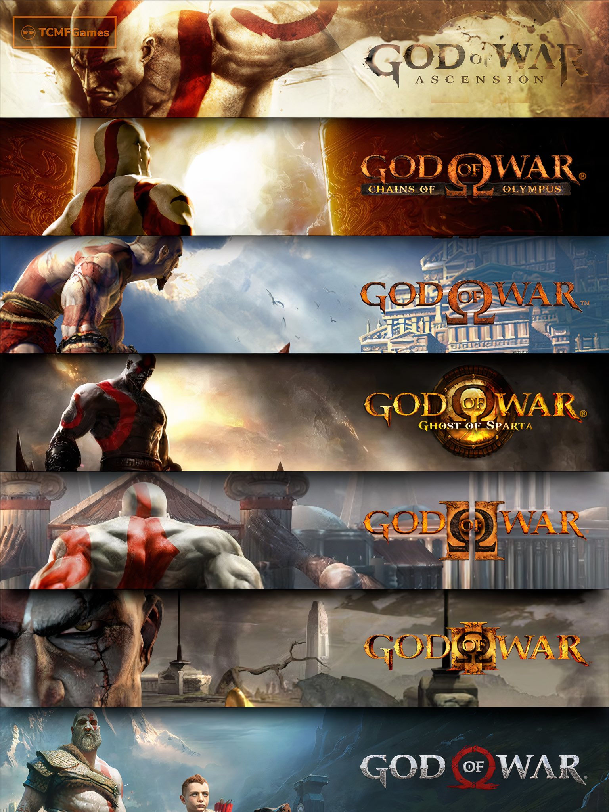

Movies

John Wick Franchise
The John Wick franchise is a series of action-thriller films starring Keanu Reeves as the titular character, John Wick,
a retired but deadly hitman seeking vengeance for the death of his beloved dog, a final gift from his deceased wife.
The narrative unfolds in a stylized, hyper-violent universe, where an elaborate underworld based on a rigid code of conduct is pervasive.
The series is famed for its intricately choreographed fight scenes, stylish cinematography, and a blend of neo-noir aesthetics.
The Imitation Game
"The Imitation Game" is a historical drama that premiered in 2014, directed by Morten Tyldum and starring Benedict Cumberbatch as Alan Turing. The film is based on the real-life story of Turing, a pioneering British computer scientist and mathematician who played a pivotal role during World War II.
The movie centers on Turing's efforts to crack the German Enigma machine, which was believed to be unbreakable. Turing and his team at Bletchley Park, the British government's covert intelligence agency, work against time to build a machine capable of decoding the thousands of messages that the German forces encrypted with the Enigma machine each day.
The Medium (2021)
"The Medium" is a 2021 horror film directed by Banjong Pisanthanakun and co-written by Pisanthanakun and the acclaimed South Korean filmmaker, Na Hong-jin, who also served as a producer. The film is presented in a documentary-style format, which adds to its eerie and realistic atmosphere.
Set in the rural landscapes of Northeast Thailand, the story revolves around a shaman named Nim, who inherited her spiritual abilities from her family's bloodline, which is believed to be under the protection of a powerful goddess. The film begins with a documentary crew setting out to explore and capture the daily spiritual practices of Nim and the impact of shamanism on her community.
Games

God of War Franchise
The games are set in a mythological universe that blends elements from ancient Greek and, in later games, Norse mythology. The protagonist, Kratos, is a Spartan warrior who initially serves the Greek gods to rid himself of the nightmares associated with his past misdeeds.
Over the series, Kratos seeks vengeance against the gods and other mythical beings who have wronged him, leading to epic battles and the toppling of deities.
Each game in the series has built upon its predecessors, expanding the mythological universe and refining its gameplay mechanics, making "God of War" a benchmark for storytelling and action in video games.

Batman: Arkham Knight
"Batman: Arkham Knight" is an action-adventure video game developed by Rocksteady Studios and published by Warner Bros. Interactive Entertainment. Released in 2015, it is the fourth main installment in the popular "Batman: Arkham" series. The game is set in a fully open-world Gotham City, larger than the maps of previous entries, and allows players to experience the conclusion of the acclaimed Arkham trilogy.
The narrative follows Batman as he confronts the ultimate threat against Gotham City, which Scarecrow has put in peril by uniting Batman's enemies and threatening to unleash a potent fear toxin. The game introduces a mysterious new character, the Arkham Knight, who has a personal vendetta against Batman and commands a vast militia.

Dying Light 1 and 2
"Dying Light" is an open-world first-person survival horror game developed by Techland and released in 2015. Set in a vast and dangerous urban environment devastated by a mysterious virus, the game is centered around the city of Harran, a quarantined zone where infected hosts and the uninfected survivors are trapped together. Players assume the role of Kyle Crane, an undercover operative sent to infiltrate the quarantine zone. The game is notable for its day-night cycle, which drastically changes the gameplay: during the day, players can scavenge for supplies and craft weapons to defend against the infected, while at night, the infected become more aggressive and dangerous, and even more lethal predators emerge.
Released in 2022, "Dying Light 2 Stay Human" builds upon the foundations of its predecessor with an enhanced focus on narrative and player choices. Set 15 years after the first game, it introduces a new protagonist, Aiden Caldwell, equipped with parkour and combat skills that make him a valuable asset in a crumbling world. The game expands on the first by offering a larger open world filled with new factions and evolving storylines that react to player decisions, affecting the city's layout and the day-to-day life of its inhabitants.